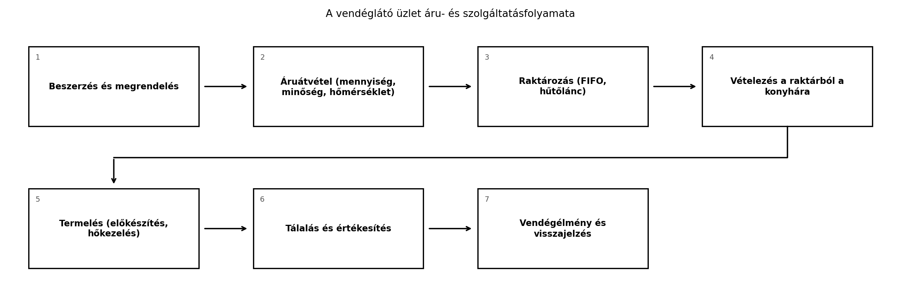

Képzeld el, hogy egy étterem konyháján dolgozol szakácsként. Reggel beérsz, és azt látod, hogy nincs elég hagyma a napi pörkölthöz, a hűtőben valaki hátulra tette be a friss tejet, miközben a régebbi elöl maradt, és a napi menüben szereplő csirkemellből sem érkezett meg a rendelt mennyiség. A vendégek folyamatosan érkeznek, az étlapon meghirdetett fogást nem tudod adni, vagy csak kapkodva, rossz minőségben dolgozol.
Ez a káosz sok konyhában elkerülhető lenne. A megoldás nem az, hogy „többet kell dolgozni”, hanem az, hogy a vendéglátó üzemet folyamatszemlélettel kell működtetni. A szakácsnak nem elég a serpenyő fölött állni; értenie kell, hogyan jut el az áru a beszerzéstől a raktáron és a termelő konyhán át a vendég tányérjáig, illetve hogy az ő döntései hol befolyásolják a minőséget, a biztonságot és a pénzügyi eredményt.
Az alábbi folyamatábra a vendéglátó üzlet alapvető anyagi és információs áramlását mutatja. A nyíl mentén halad a nyersanyag, a dobozokban pedig azok a tevékenységek vannak, amelyekért a konyhának vagy az üzlet más területeinek felelősséget kell vállalnia.

Ha a lánc bármelyik eleme megszakad – például rossz a beszerzés, vagy a raktárból nem megfelelő tételeket vételeznek –, az hiba a tányéron is megjelenik. Ezért beszélünk a vendéglátásban főfolyamatról (áru útja) és mellékfolyamatokról (tisztítás, adminisztráció, mosogatás), amelyek a főfolyamatot támogatják.
Definíció. A vendéglátás olyan gazdasági tevékenység, amely készételkészítést vagy italkészítést, illetve az ezekhez kapcsolódó szolgáltatásokat nyújt a vendég részére, jellemzően helyben fogyasztásra. Ide tartoznak az éttermek, büfék, kávézók, szállodai éttermek, kitelepülések, illetve a közétkeztetést végző konyhák is.
A vendéglátó tevékenység nem egyszerűen „élelmiszer eladása”. A bolt is elad élelmiszert, de ott a vevő hazaviszi és maga készíti el. A vendéglátásban a vendég a kész, adagolt, tálalt ételt kapja, kiszolgálással, környezettel és időbeli elérhetőséggel együtt. Ezt nevezzük szolgáltatástartalomnak.
Megjegyzés. A vendéglátás ezért kettős természetű: egyszerre termelő (konyha) és szolgáltató (felszolgálás) tevékenység. A szakács munkája a termelő oldal, de az ő munkája nélkül a szolgáltatás üres ígéret.
A vendéglátás jelentősége: - Gazdasági: sok munkahelyet teremt, idegenforgalmi bevételt hoz, és beszállítói láncokat tart fenn (termelők, nagykereskedők, élelmiszeripar). - Társadalmi: a családi események, üzleti találkozók, turisztikai élmények színtere. - Közétkeztetési: az iskolai, kórházi, munkahelyi étkeztetés a lakosság napi táplálkozásában alapvető szerepet játszik, ezért szigorú élelmiszer-biztonsági és táplálkozási követelmények vonatkoznak rá.
A vendéglátó üzlet működését négy fő szakaszra bontjuk:
Ezek a szakaszok egymásra épülnek, és mindegyikben keletkeznek adatok (bizonylatok, mérések, nyilvántartások), amelyeket az Ügyvitel a vendéglátásban: bizonylatok, nyugta, számla, leltár alfejezet dolgoz fel részletesen.
A beszerzés a folyamat indítása. Nem elég azt tudni, hogy „kell csirkemell”; azt is tudni kell, hogy milyen minőségben, mennyiért, mikorra, mennyit és honnan.
Árufőcsoportok. A vendéglátó üzletben használt árukat csoportosítjuk, mert más-más tárolási és kezelési szabályaik vannak:
| Árufőcsoport | Példák | Tárolási sajátosság |
|---|---|---|
| Élelmiszer nyersanyag | hús, zöldség, tej, tojás, liszt | hűtést, fagyasztást vagy száraz tárolást igényel |
| Félkész és kész termék | fagyasztott zöldség, tészták, fűszerkeverékek | gyártói utasítás szerint |
| Italok | üdítő, bor, sör, kávé | száraz, hűvös hely vagy hűtő |
| Nem élelmiszer (szakáru) | edények, csomagolóanyag | elkülönítve, élelmiszertől távol |
| Vegyi áru | tisztítószerek, fertőtlenítők | mindig elkülönítve, zártan |
Higiénia. A vegyi árut tilos élelmiszerrel egy polcon, egy szállítójárműben összekeverve tárolni. Ha a tisztítószer kiszivárog és beszennyezi a lisztet, az egész tételt ki kell dobni, mert vegyi szennyezésnek minősül.
Beszerzési formák. - Nagykereskedelem és cash and carry: A szakács vagy a beszerző elmegy a nagykereskedelmi áruházba (közismert példa a METRO jellegű cash and carry), ott kiválasztja az árut, azonnal fizet vagy szerződéses keretben vásárol, és elszállítja vagy szállíttatja. Előnye a gyorsaság, a választék és az azonnali ár-összehasonlítás. - Szállítási szerződés: A vendéglátó üzlet egy beszállítóval (például húsüzemmel, zöldség-nagykereskedővel) szerződést köt. A szerződés rögzíti a terméket, a minőségi követelményeket, a szállítási ütemet (például hétfőn és csütörtökön), a hőmérsékleti feltételeket és a fizetési határidőt. Ezt használjuk akkor, ha nagy mennyiséget, kiszámítható ütemben rendelünk. - Közvetlen termelői beszerzés: Például őstermelőtől zöldség, helyi pékségből kenyér. Rövid a beszerzési lánc, friss az áru, de az élelmiszer-biztonsági ellenőrzést (nyomonkövethetőség, állati eredetű termék esetén állatorvosi jel) itt is dokumentálni kell.
Készletszintek. A szakácsnak vagy a beszerzőnek tudnia kell, mennyit rendeljen. Ha túl sokat rendel, a pénz a raktárban áll, az élelmiszer megromolhat. Ha túl keveset rendel, leáll a termelés, a vendég nem kap ételt.
Összefüggés. A rendelendő mennyiség nagyságrendje: ahol a napi átlagfelhasználás (kg vagy l), a két beszerzés között eltelt napok száma, a biztonsági készlet, pedig a rendeléskor ténylegesen meglévő készlet. Ez közelítő tanulási képlet; a pontos rendelést a saját készletnyilvántartás és az üzemi kalkuláció határozza meg.
Példa. A konyha napi 10 kg csirkemellet használ fel. A beszállító háromnaponta jön. A biztonsági készlet legyen 8 kg arra az esetre, ha egy szállítás késik. Ekkor Ha a raktárban még 6 kg van, a következő beszállításkor körülbelül 32 kg-ot kell rendelni, hogy a háromnapos ciklust biztonsággal átvészelje a konyha.
Hűtőlánc. A hűtött és fagyasztott élelmiszereknél a hőmérsékletet a beszerzéstől a felhasználásig tartani kell. Ezt nevezzük hűtőláncnak.
Szabály. A hűtött áru átvételekor, tárolásakor és a konyhára történő kiosztásakor a termék hőmérséklete nem lépheti túl a gyártó és a HACCP-terv által megadott határt. Tanulási értékek: hűtött áru legfeljebb 5 °C, fagyasztott áru legfeljebb -18 °C (ellenőrizendő: NÉBIH-útmutató, üzemi HACCP-terv). A hűtőautóból gyorsan kell betárolni; az átvételre a(z) Az élelmiszerek kiválasztása, átvétele és minőségellenőrzése alfejezet átvételi ellenőrzőlistáját használjuk.
A raktározás célja, hogy az áru a beszerzés és a felhasználás közötti időben megőrizze minőségét és élelmiszer-biztonságát.
Raktártípusok. A vendéglátó üzletben az árucsoportokhoz igazodó raktárakat alakítunk ki:
Definíció. A FIFO (First In, First Out = „ami előbb jött be, az megy előbb ki”) raktározási elv. Azt jelenti, hogy a korábban beszerzett, rövidebb lejáratú tételt kell először felhasználni.
Szabály. A gyakorlatban a régebbi árut a polcon előre tesszük, az újat pedig mögé. Így a raktáros és a szakács is a régebbihez nyúl először. A FIFO betartását az árucímkén lévő lejárati idő és a raktári karton segíti. Ha a raktárban hátul marad a régi tétel, az eladhatatlan hulladék vagy – ami rosszabb – romlott, veszélyes élelmiszer lesz.
Higiénia. A nyers húst és a nyers zöldséget egymástól és a kész élelmiszertől elkülönítve kell tárolni. A hűtőben a kész, hőkezelt étel mindig a felső polcra kerül, a nyers hús pedig az alsó polcra, mert a nyers hús leve elszennyezheti az alatta tárolt ételt. Ez a keresztszennyeződés megelőzésének alapja.
Definíció. A vételezés a raktárból a termelő konyha részére történő anyagkiadás. A szakács (vagy a konyhafőnök) a napi menü, az étlap és a technológiai lapok alapján meghatározza, milyen nyersanyagból mennyire van szüksége, majd a raktárból vételezési ív ellenében kikéri az árut.
A vételezés azért kritikus, mert itt válik szét a raktár (gazdálkodás) és a konyha (termelés). Ha a vételezett mennyiség nincs papíron, akkor a hónap végén nem lehet tudni, mire ment el az anyag, és mennyi az étel anyagköltsége.
Eljárás. A vételezés lépéssora: 1. A konyhafőnök a napi munkaterv és a technológiai lapok alapján összeállítja a szükségleti listát. 2. A konyhafőnök vagy a megbízott szakács megírja a vételezési ívet: feltünteti a dátumot, a kikért nyersanyag pontos nevét (például „sertéskaraj” vagy „BL55 finomliszt”), a kért mennyiséget mértékegységgel, és a konyhai helyet, ahova kerül. 3. A raktáros kiadja az árut, és ráírja vagy rányomtatja a ténylegesen kiadott mennyiséget. 4. A vételező szakács ellenőrzi az átadott árut (mennyiség, minőség, hőmérséklet), majd mindketten aláírják az ívet. 5. Az egyik példány a raktárban, a másik a konyhán marad. Az ív adatai bekerülnek a készletnyilvántartásba.
Táblázat. Egyszerű vételezési ív mintája:
| Sorszám | Nyersanyag megnevezése | Kért mennyiség | Kiadott mennyiség | Megjegyzés |
|---|---|---|---|---|
| 1. | Sertéskaraj | 12 kg | 12,4 kg | bruttó tömeg |
| 2. | Vöröshagyma | 5 kg | 5 kg | tisztítva |
| 3. | Édes nemes paprika | 0,5 kg | 0,5 kg | fűszer |
A fenti minta csak a fő oszlopokat mutatja. Az üzemi íven szerepelnie kell az aláírásoknak, a kiadás időpontjának és a tételazonosítónak is, mert ez a nyomonkövethetőség része.
Kritikus pont. A hűtött, hőkezelés nélkül fogyasztandó vagy gyorsan romló nyersanyagot (például darált hús, hal, tejszín) csak akkor emeli ki a konyha a hűtőből, amikor az előkészítés azonnal megkezdődik. Nem szabad a reggeli vételezés után több órán át a konyhapulton hagyni, mert a baktériumok a veszélyes hőmérsékleti tartományban szaporodnak. A munkát úgy kell szervezni, hogy a vételezésből az áru azonnal a munkaasztalra vagy a hűtőbe kerüljön.
Az értékesítés nem csak a pénztárgép használatát jelenti. A konyha az árut készétellé alakítja, de a vendég a teljes élményért fizet: az étel ízéért, a tálalásért, a felszolgálás sebességéért, a helyiség tisztaságáért és a kiszolgálás hangneméért.
Választékközlés. A vendég az étlapról és az itallapról tájékozódik. A szakácsnak tudnia kell, hogy az étlap nem díszlet: minden rajta lévő tétel legyártható, mert a meghirdetett választékot a vendég joggal várja el (ellenőrizendő: Ptk. és fogyasztóvédelmi szabály az étlap jogi minősítéséről). Ha az étlapon „mentás zöldborsókrémleves” szerepel, de a konyhán nincs menta, az nemcsak kellemetlen, hanem fogyasztóvédelmi szempontból is kifogásolható, mert a vendég a meghirdetett választékot joggal várja el.
Értékesítési rendszerek. A legjellemzőbb formák: - Asztali felszolgálásos értékesítés: a vendég rendel, a felszolgáló rögzíti, a konyha legyártja, a felszolgáló kihozza, a vendég helyben fogyaszt. - Önkiszolgáló / büfé rendszer: a vendég sorban haladva tálcára kapja az ételt, a kasszánál fizet. A konyhának itt különösen figyelnie kell a készentartási hőmérsékletre (meleg étel jellemzően 63 °C felett, hideg étel 5 °C alatt – tanulási érték, ellenőrizendő: üzemi HACCP). - Büfé / svédasztal: a vendég maga szedhet, a konyha folyamatosan tölti fel. Itt az adagoló eszközök, a cserék és a hőntartás élelmiszer-biztonsága kiemelt. - Kiszállítás és elvitel: a technológiai lapok mellett a csomagolás és a szállítási idő alatti hőmérséklet a kritikus pont.
A fő folyamat (áru → étel → vendég) nem működik kiszolgáló tevékenységek nélkül. Ezeket nevezzük mellékfolyamatoknak.
Mosogatás. A tiszta és a szennyezett eszközök útja fizikailag is váljon el. A mosogatóba érkező szennyezett tányér ne kerüljön kapcsolatba a tiszta tányérokkal. A mosogatógép hőfoka és a kémiai programok ellenőrzése a takarítással foglalkozó kollégák feladata, de a szakács is köteles jelezni, ha a gép nem mosogat jól, vagy ha a poháron, edényen maradék zsírt, szagot érez.
Hulladékkezelés. A konyhai hulladékot (zöldséghéj, húsnyesedék) zárt, nedvességet ki nem engedő gyűjtőbe teszik, és rendszeresen ürítik. A veszélyes hulladék (például eltörött hőmérő, gombavizsgálat nélküli gomba, lejárt vagy visszahívott termék) külön utat igényel, amit a HACCP-terv és a hulladékkezelési szabályzat rögzít. A hulladékot soha ne tárold nyersanyag vagy készétel közvetlen közelében.
A folyamat minden lépésében ellenőrizni kell: - Beszerzés: a megrendelt és a szállított mennyiség, a hőmérséklet, a csomagolás épsége. - Raktározás: a raktár hőmérséklete, a FIFO betartása, a tárolási elkülönítés. - Termelés: a vételezett anyag és a technológiai lap mennyisége egyezzen, a maghőmérséklet, az adagsúly. - Értékesítés: az étlapon szereplő étel külleme, az adag és a rendelés egyezősége, a felszolgálási hőmérséklet.
A minőségellenőrzés nem „rendőri” tevékenység, hanem a szakács saját munkájának visszamérése. Ha a tányéron a rántott szelet kisebb a technológiai lapon megadottnál, az nem csak vendégpanasz, hanem anyagköltség-eltérés is: a konyhából több hús fogyott, mint amit eladtak.
1. Hiba: A raktárban elfogy a hétvégi menühöz rendelt alapanyag, mert a szakács „megérzésre” rendelt. Ok: Nem számolta ki a törzskészletet és a biztonsági készletet; nem használta a vételezési ívet. Helyes gyakorlat: A rendelést a napi átlagfelhasználás és a beszerzési ciklus alapján, dokumentálva kell számolni.
2. Hiba: A hűtőben elöl a friss, hátul a régi tejföl. A régi lejár, a boltban vásárolt újat használod el, a régi kiszárad vagy megromlik. Ok: FIFO elv ismeretlen vagy nem tartják be. Helyes gyakorlat: Kiadáskor a raktáros a régebbi tételt adja előre, a szakács pedig a dátumcímke ellenőrzésével ő is figyel.
3. Hiba: A szombati nagy rendezvényre rendelt hűtött lazacot reggel 8-kor kivették a hűtőből, de a halfilézés csak délután 1-kor kezdődött. A hal elveszítette a hideg láncot. Ok: Rossz munkaszervezés, a vételezést nem az előkészítéshez igazították. Helyes gyakorlat: A hűtött, gyorsan romló árut úgy kell kivételezni, hogy azonnal a hűtött munkahelyre kerüljön, vagy szakaszosan, kis adagokban vételezzenek.
4. Hiba: A hónap végi leltárnál hiány van sertéshúsból. A szakács azt mondja, „felhasználtuk”, de a raktárnyilvántartás nem egyezik. Ok: A vételezési ív hiányzik vagy pontatlan. Helyes gyakorlat: Minden raktárból kikerülő tételnek szerepelnie kell a vételezési íven, aláírással, mert ez a készletnyilvántartás alapbizonylata.
Egy belvárosi étterem hétfői étlapjára a séf „tárkonyos csirkeraguleves friss tárkonnyal” tételt ír. A hétvége után a raktárban nincs tárkony, a szállító hétfőn csak délután tud jönni, a séf pedig ebből a friss fűszerből biztonsági készletet sem tartott. A helyettesítő szárított tárkonnyal készített leves sötétebb, kevésbé friss illatú lett. Egy vendég a nyitott konyha mellett megkérdezte, hol van az ígért friss tárkony. Az eset tanulsága: az étlapot a beszerzés és a raktárkészlet ismeretében kell tervezni; ha egy friss alapanyag szállítása nem megbízható, a menüt módosítani kell, vagy megfelelő biztonsági készletet kell tartani.
Önellenőrzés – válaszok 1. Beszerzés, raktározás, termelés, értékesítés és szolgáltatás. 2. A törzskészlet a két beszerzés közötti időszak átlagos felhasználását fedezi, a biztonsági készlet pedig a váratlan késésre vagy forgalomnövekedésre tartott többlet. 3. A FIFO (First In, First Out) azt jelenti: ami előbb érkezett be, az használódjon fel előbb. Így a rövidebb lejáratú áru nem marad a polcon, megelőzi a romlást és a hulladékot. 4. A vételezési ív legalább: sorszám, nyersanyag megnevezése, kért mennyiség, kiadott mennyiség, megjegyzés, dátum, aláírások. 5. Mert a hűtött és fagyasztott élelmiszerben a hőmérséklet emelkedésével a káros baktériumok elszaporodhatnak, és a készétel ételfertőzést okozhat. A hűtőlánc megszakadása élelmiszer-biztonsági kockázat.
1. feladat (A) Csoportosítsd az alábbi nyersanyagokat a megfelelő raktártípushoz: - Fagyasztott zöldborsó - Tisztítószer - Ásványvíz - Tojás - Liszt - Friss csirkemell Írd le mindegyiket a megfelelő raktártípus mellé (szárazáru, hűtött, fagyasztó, ital, vegyiáru)!
2. feladat (A) Mi a helyes sorrendje a vállalati folyamatnak? Írd le 1–6-ig a lépéseket: - Termelés - Vendégélmény - Beszerzés - Tálalás - Áruátvétel - Raktározás
3. feladat (B) Egy konyha napi átlagban 5 kg párizsit használ a reggeliző részleghez. A szállító háromnaponta jön. A biztonsági készlet 4 kg, a rendeléskor a raktárban nincs párizsi. Hány kilogrammot kell rendelni egy beszállításkor?
4. feladat (B) Írd le a vételezés lépéseit számozott eljárásként, és minden lépéshez írj egy mondatot, hogy mi a felelőssége a szakácsnak abban a lépésben!
5. feladat (C) Egy étterem konyháján a hűtőben egymás mellett találsz: nyers csirkemellet a felső polcon, alatta fedetlenül kész vaníliaszószt. A hűtőszekrény belső hőmérőjét nem nézték meg reggel. Sorold fel a lehetséges élelmiszer-biztonsági hibákat és azok következményeit! Mit változtatnál?
6. feladat (D) Vendéglátó üzletet tervezel nyitni. A napi menü leves + főétel + desszert. Válassz ki egy levest, egy főételt és egy desszert technológiai lapot a könyv korábbi fejezeteiből, és készíts hozzájuk egy egyszerű napi vételezési ívet 20 adagra. Tüntesd fel a nyersanyagokat, a kért mennyiséget, és azt, hogy melyik raktárból (száraz, hűtött, fagyasztott) vételeznél. A mennyiségeket a technológiai lap adataiból számold ki (szorozd meg kettővel a 10 adagost).
1. feladat (A) - Fagyasztott zöldborsó → fagyasztó raktár (-18 °C alatt, ellenőrizendő) - Tisztítószer → vegyiáru raktár (elkülönítve) - Ásványvíz → italraktár (hűvös, száraz hely) - Tojás → hűtött raktár (jellemzően 5 °C alatt, ellenőrizendő) - Liszt → szárazáru raktár (hűvös, száraz) - Friss csirkemell → hűtött raktár, elkülönítve a nyers hús zónában
2. feladat (A) 1. Beszerzés 2. Áruátvétel 3. Raktározás 4. Termelés 5. Tálalás 6. Vendégélmény
3. feladat (B) Adott: , , , . Keresett: . Képlet: . Behelyettesítve: . Tehát a beszállításkor körülbelül 19 kg párizsit kell rendelni. (Ellenőrzés: 3 nap · 5 kg = 15 kg fogyasztást fed le; a maradék 4 kg a biztonsági tartalék.)
4. feladat (B) Eljárás: Vételezés a konyhára 1. Szükséglet megállapítása: A szakács a napi munkaterv és a technológiai lap alapján tudja, mit kell főzni, és mennyi nyersanyag kell hozzá. 2. Vételezési ív kiállítása: A szakács/részlegvezető ráírja a pontos megnevezést, a kért mennyiséget és a dátumot. Ez a dokumentáció alapja. 3. Raktári kiadás: A raktáros kikeresi az árut, és a ténylegesen kiadott mennyiséget is rávezeti. A szakács itt figyeli, hogy a raktáros a FIFO elv szerint adja-e ki a régebbi lejáratú tételt. 4. Átvétel ellenőrzése: A szakács szemrevételezi az árut (szín, szag, hőmérséklet, csomagolás), és megnézi, hogy a kiadott mennyiség egyezik-e az íven szereplővel. 5. Aláírás: Mindkét fél aláírja. Ezzel a készletért való felelősség átkerül a raktárról a konyhára. 6. Felhasználásra történő szállítás: A gyorsan romló árut azonnal hűtött munkahelyre viszik, nem hagyják a konyhapulton. Az ív egy példánya a konyhán marad, a másik a raktárban.
5. feladat (C) Hibák: (1) A nyers csirke leve rácsöpöghet az alatta lévő, hőkezelés nélkül fogyasztandó vaníliaszószra. (2) A szósz fedetlen, a nyers hús és a kész étel nincs elkülönítve. (3) A hűtő hőmérsékletét nem ellenőrizték; ha a hűtő meleg, a szószban és a csirkében is elszaporodhatnak a baktériumok. Javítás: a kész étel kerüljön felülre, letakarva; a nyers hús alulra, tálcán, jól záródó edényben. A hűtő hőmérőjét naponta legalább kétszer le kell olvasni és be kell írni a HACCP-dokumentációba. A nyers húsos zónát címkével jelöljük, és a szósz tetejét fóliával zárjuk.
6. feladat (D) (Ez egy mintamegoldás; a tanuló saját receptjei szerint töltendő ki.) Tegyük fel, a menü: húsleves, rántott sertésszelet párolt rizzsel, madártej.
Vételezési ív 20 adagra
| Nyersanyag | Szükséglet 20 adagra | Raktár | Megjegyzés |
|---|---|---|---|
| Csirkeaprólék leveshez | 4 kg | hűtött | nyers, hűtve tárolt; a nyers hús zónájából |
| Sárgarépa | 1,2 kg | hűtött | leveszöldség, tanulási adat |
| Petrezselyemgyökér | 0,8 kg | hűtött | leveszöldség, tanulási adat |
| Zellergumó | 0,6 kg | hűtött | allergén: zeller; tanulási adat |
| Vöröshagyma | 0,4 kg | száraz | tanulási adat |
| Levestészta | 0,4 kg | száraz | allergén: glutén, tojás; levesbetét |
| Napraforgó étolaj (bő zsiradékos sütéshez) | 3 l | száraz | a sütőolaj cseréje a HACCP-terv szerint |
| Só | 0,15 kg | száraz | tanulási adat |
| Őrölt bors | 0,02 kg | száraz | tanulási adat |
| Sertéskaraj | 4 kg | hűtött | szeleteléshez |
| Búzaliszt | 0,8 kg | száraz | bundázáshoz |
| Tojás (bundázáshoz) | 12 db | hűtött | rántott szelethez |
| Tojás (madártejhez) | 20 db | hűtött | sodóhoz és habgaluskához |
| Zsemlemorzsa | 0,7 kg | száraz | bundázáshoz |
| Rizs | 1,2 kg | száraz | köret |
| Tej | 2 l | hűtött | madártejhez |
| Cukor | 0,4 kg | száraz | madártejhez |
(Megjegyzés: ehhez a menühöz fagyasztott tétel nem szükséges, ezért a fagyasztott raktár sora üres; a fenti mennyiségek szemléltető tanulási adatok; a pontosakat a technológiai lap és az anyaghányad-számítás alapján kell kiszámolni.)
A vendéglátás nemcsak ételkészítés, hanem komplex gazdálkodási és szolgáltató folyamat. A négy fő szakasz: beszerzés, raktározás, termelés, értékesítés és szolgáltatás. A beszerzésnél a rendelendő mennyiség a két beszerzés közötti várható felhasználás (napi átlag × napok száma) plusz a biztonsági készlet, mínusz a rendeléskor meglévő (pillanatnyi) készlet; a hűtőláncot a beszerzéstől az értékesítésig tartani kell. A raktározásban a FIFO elv (először be, először ki) a lejárat okozta romlást és hulladékot csökkenti. A termeléshez a raktárból vételezési ívvel emelünk anyagot, amelyen a nyersanyag, a kért és kiadott mennyiség, a dátum és az aláírások szerepelnek. A készétel értékesítése az étlapról (választékközlés) indul, és a vendégélménnyel zárul. A mellékfolyamatok, például a mosogatás és a hulladékkezelés, akkor jók, ha nem keresztezik a fő folyamatot, és nem okoznak élelmiszer-biztonsági kockázatot.
Továbbvitt eredmény. A fenti folyamatábra és a vételezési ív szerkezete alapján az Üzletkörök, üzlettípusok, tárgyi és személyi feltételek alfejezet megmutatja, hogy az egyes konyhatípusokban hogyan alakul a raktározás és a termelés; az Ügyvitel a vendéglátásban: bizonylatok, nyugta, számla, leltár alfejezet pedig a vételezési ív és a készletnyilvántartás kötelező bizonylati hátterét tárgyalja.
Forrástípusok: 852/2004/EK rendelet (élelmiszer-higiénia, hűtőlánc, elkülönített tárolás), NÉBIH GHP útmutató a vendéglátás jó higiéniai gyakorlatához, a vendéglátó üzlet HACCP-terve, a kereskedelemről és a vendéglátásról szóló hatályos hazai jogszabályok, a NAV ügyviteli előírásai, KSH vendéglátó-ipari statisztikai osztályozása.
Ellenőrizendő: a hűtött (5 °C) és fagyasztott (-18 °C) tárolási hőmérsékletek hatályos NÉBIH-útmutató szerinti pontos értékei; a vételezési ív kötelező minimális adattartalma a hazai ügyviteli szabályok szerint; a konkrét vendéglátó üzlettípusokra vonatkozó aktuális besorolási szabályok; a cash and carry beszerzésre vonatkozó aktuális adózási-számlázási elvárások.